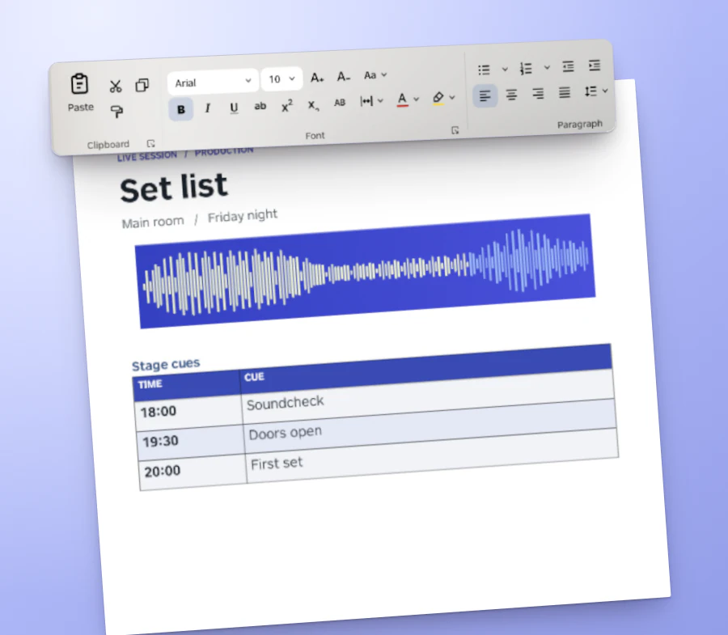
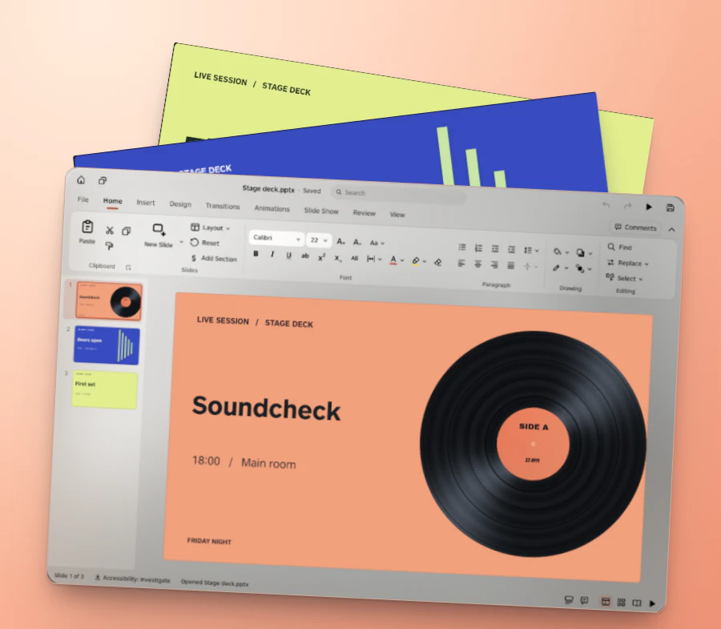

Documents
DOCX / ODT / TXTStructure a draft with headings, tables and a linked table of contents. Compare versions, track edits and discuss a passage in a comment thread.
Write documents, analyze spreadsheets and present slides in your own spatial workspace.
Free · Version 1.3.4 · PICO OS 6.2+ · arm64

Put together a live show. Write the running order, find the most-played track and cue up the deck for soundcheck.

Structure a draft with headings, tables and a linked table of contents. Compare versions, track edits and discuss a passage in a comment thread.

Calculate across sheets, sort tracks by plays and filter to a single venue. Turn the results into a chart, or use Goal Seek to work backwards from a target.

Build slides with layouts, images and transitions. Rehearse with a timer, then see your notes and the next slide while the audience sees the show.

Choose Open in New Window to keep a reference in sight. Read the running order in Pages while you check track plays in Sheets, with each file in its own window on PICO Space Pro.
Follow a set list from document to chart to presentation in 33 seconds of real editor footage.
Open Microsoft Word, Excel and PowerPoint files in their matching editors. Send a PDF when the finished work is ready to share.
Full format guide| Editor | Open and save | Also opens |
|---|---|---|
| Documents | DOCX, ODT, TXT | DOC, RTF |
| Spreadsheets | XLSX, ODS, CSV | XLS |
| Presentations | PPTX, ODP | PPT |
Older DOC, XLS and PPT files save as a new editable copy. PDF export is available in all three editors.
Open and save directly on your headset. The editors work without an account or internet connection.
AutoSave keeps your work on disk. AutoRecover offers a local draft after an interruption.
Choose from 18 interface languages. Keyboard shortcut guides are built into each editor.
Signed APK for PICO Space Pro running PICO OS 6.2 or later.